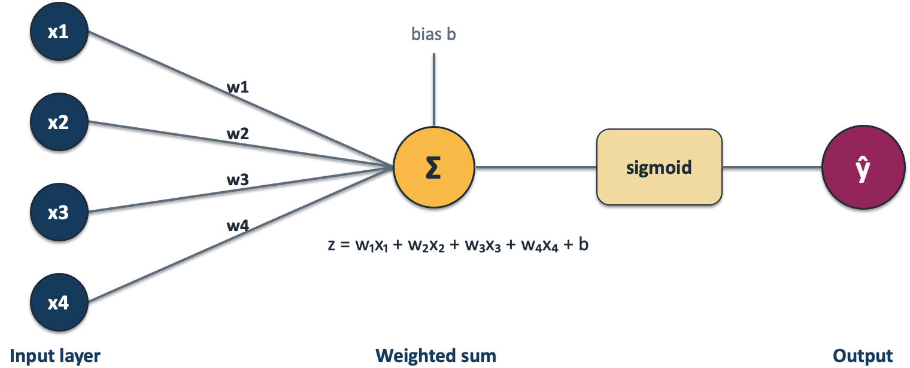
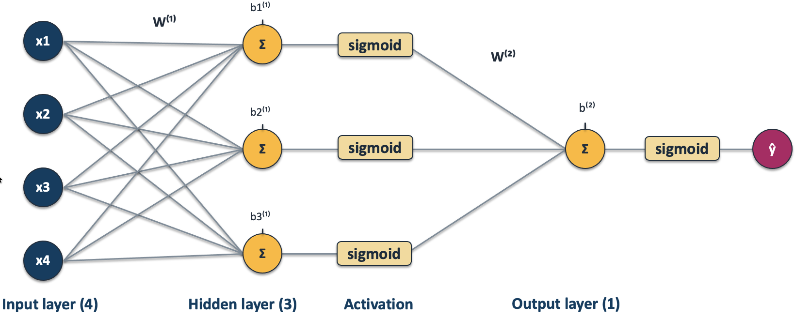
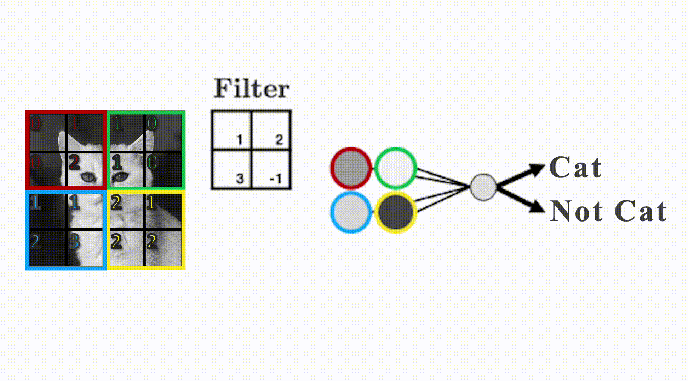

By the end of this chapter, you should be able to:
Explain how hidden layers and nonlinear activations produce learned features.
Describe neural-network training at a high level, without deriving weight updates.
Explain how images are represented numerically and why spatial structure matters.
Distinguish image classification from object detection and segmentation.
Interpret class scores and softmax probabilities in multiclass classification.
Explain how convolutional filters use local structure and share weights across image locations.
Use a frozen pretrained CNN to extract features and train logistic regression for new labels.
Distinguish what was learned during pretraining from what is learned on the target dataset.
Evaluate an image classifier while accounting for preprocessing, related images, domain shift, and computational cost.
Images contain information that is difficult to express as a short list of hand-designed features. Consider the cats below. They have different coat colours, patterns, and lengths of fur, and appear in different poses, settings, and lighting. Some are sleeping; others are playing or grooming. Despite these differences, every image has the same label: cat. An effective classifier needs to recognize features that distinguish cats from other categories while tolerating variation within the cat category.
Cats with different coat colours, patterns, and lengths of fur, shown sleeping, grooming, playing, and resting in indoor and outdoor settings. Despite differences in appearance, pose, viewpoint, and background, all share the label cat.
Images from the same class can therefore have very different pixel arrays. Which differences matter depends on the task: coat colour does not change the label cat, but it would matter if our task were to classify coat colours.
In this chapter, we will build a classifier for seven food categories using only a few hundred labelled images. That is far too little data to train a large vision model from scratch. Our practical solution will be transfer learning: we will reuse a representation learned from a much larger image collection and adapt it to our task.
Recall that a linear model combines input features using learned weights and an intercept. In binary logistic regression, we then apply sigmoid to turn the resulting score into the predicted probability of the positive class. The diagram below draws these familiar operations as a network.

Binary logistic regression drawn as a network: four input features contribute to a weighted sum plus an intercept, followed by sigmoid to produce the predicted probability of the positive class.
Read the diagram from left to right. Each connection multiplies an input \(x_j\) by its weight \(w_j\). The \(\Sigma\) symbol collects these contributions and adds \(b\), giving the score \(z\). The bias\(b\) is another name for the intercept. Finally, sigmoid converts the score into a probability. Here, the output labelled \(\hat y\) represents \(P(y=1\mid\mathbf{x})\), rather than a predicted class label. We would apply a threshold to obtain a class prediction.
Drawing a network does not, by itself, make the model more flexible. Imagine a two-feature classification problem in which one class occupies a small circle and the other surrounds it. A straight decision boundary cannot separate these classes. We have already encountered models that can capture nonlinear relationships. How could we extend the weighted-sum idea to do this?
A neural network introduces intermediate computations called hidden layers. Each unit in a hidden layer computes its own weighted sum and intercept, then applies a nonlinear activation function. The next diagram shows four inputs feeding three hidden units, whose outputs are combined to make a binary classification prediction.

A neural network with four inputs, three hidden units using sigmoid activations, and one output unit. The final sigmoid produces the predicted probability of the positive class.
Each hidden unit receives the same four input features but has its own weights and bias, so it can compute a different transformation. Its sigmoid output becomes a new feature for the output unit. The output unit combines these three features using another weighted sum and bias, then applies sigmoid to produce a probability.
The activation boxes are drawn separately to show the steps within each unit; they are not extra hidden units. The labels \(W^{(1)}\) and \(W^{(2)}\) refer to the collections of weights used at the hidden and output layers. Their superscripts identify layers, not powers. Likewise, \(b_1^{(1)}\), \(b_2^{(1)}\), and \(b_3^{(1)}\) are the three hidden-unit biases, while \(b^{(2)}\) is the output bias. We do not need matrix notation to follow this computation.
The outputs of the hidden units are learned features. The final layer combines these features to make a prediction:
Unlike manually constructing features before fitting a model, training a neural network learns the hidden-layer weights together with the output-layer weights. The features are learned to help with the prediction task; they need not have names or meanings we can easily recognize. Although the hidden sigmoid outputs lie between zero and one, they are intermediate features, not predicted class probabilities.
The nonlinear activation matters. Stacking weighted sums without nonlinear activations still gives a single weighted sum and intercept. Hidden activations allow a network to produce nonlinear decision boundaries. They play a different role from the final sigmoid, which converts a binary classification score into a probability.
We used sigmoid in the hidden layer to build on a familiar function, but other nonlinear activations are also used. For example, the rectified linear unit (ReLU) returns zero for negative inputs and leaves positive inputs unchanged: \(\operatorname{ReLU}(z)=\max(0,z)\). A network need not use the same activation in its hidden layers as at its output.
Networks can contain several hidden layers, each transforming the representation from the previous layer. This is the idea behind deep learning. We will use such a network to produce image features, rather than design its layers ourselves.
How does a network learn its weights?
The supervised-learning workflow has not changed: training uses examples with known targets to fit a model, which can then predict targets for new examples.
The supervised-learning training workflow.
A network’s architecture specifies its layers and connections. Its parameters are the weights and intercepts learned during training. Choosing an architecture and learning its parameters are different activities.
To understand training, imagine starting with weights that make poor predictions. A loss function assigns a numerical penalty to disagreement between predictions and known targets. Training repeatedly computes predictions, measures the loss, and makes small changes to the weights intended to reduce it.
How do we choose those changes when there are millions of weights? A gradient describes how small changes in the weights affect the loss. Backpropagation efficiently computes this information through the network, and an optimizer uses it to update the weights. We will not derive these calculations or implement them in this chapter.
The learning rate controls the size of the updates. Training often processes small batches of examples at a time; one complete pass through the training set is an epoch. These are training choices, not learned weights. More epochs do not guarantee better predictions on new data: training loss may fall while validation performance worsens through overfitting.
For our worked example, this expensive neural-network training has already happened on another dataset. We will keep the resulting weights fixed and train a familiar logistic-regression classifier on the network’s features.
What is computer vision?
Computer vision is the area of computing concerned with extracting useful information from images and video. Different applications require different kinds of output:
Image classification assigns a label to an entire image, such as pizza or sushi.
Object detection identifies objects and draws a bounding box around each one.
Semantic segmentation assigns a category to each pixel.
Instance segmentation separates individual objects as well as identifying their categories.
These tasks are related, but they are not interchangeable. An image classifier can report that a dog appears somewhere in a photograph; it does not tell us where the dog is or trace its outline. We will focus on image classification and return briefly to object detection near the end.
Images as numerical arrays
A colour image can be stored as a three-dimensional array: height \(\times\) width \(\times\) colour channels. In an RGB image, each pixel has a red, green, and blue value. Let us inspect one of the images used later in the chapter.
A grayscale image needs only one intensity value per pixel and can be represented as a height-by-width matrix. A colour image adds the channel dimension.
sample_path =next((DATA_DIR /"food-transfer-learning"/"train"/"pizza").glob("*.jpg"))sample_image = Image.open(sample_path).convert("RGB")sample_array = np.asarray(sample_image)print(f"Image shape: {sample_array.shape}")print("A 3 x 3 patch of RGB values:")display(sample_array[:3, :3, :])plt.imshow(sample_image)plt.title("One training image")plt.axis("off");
We could flatten the array into one long feature vector and pass it to a model from an earlier chapter. However, a \(200 \times 200\) RGB image already has \(200 \times 200 \times 3 = 120{,}000\) pixel values. More importantly, flattening hides the two-dimensional organization of the pixels. Pixels next to one another are no longer treated as neighbours, and moving an object slightly changes many feature positions.
This does not mean that logistic regression or another familiar classifier can never be used with images. It means that raw pixels are usually a poor representation. Later, we will use a neural network to transform each image into a much smaller feature vector, then fit logistic regression to those features.
ImageNet and multiclass classification
ImageNet is a large labelled image collection widely used for pretraining. The familiar ImageNet classification benchmark uses 1,000 categories. A model trained for those categories produces one score per category; it cannot automatically invent new output labels for our task.
Our food task is a multiclass classification problem: each image receives exactly one label from \(K\) possible classes. This differs from binary classification, which has two classes, and from multilabel classification, in which one image could simultaneously receive labels such as person, bicycle, and helmet.
Many scikit-learn classifiers support multiclass targets directly. Multiclass logistic regression learns a score for each class. For an example with feature vector \(\mathbf{x}\), class \(k\) receives the score
The exponentials make larger scores receive more probability, while the denominator normalizes across all classes. Softmax does not establish that these probabilities are well calibrated; it only performs the conversion from scores to a probability distribution.
The predicted class is class 2 because it has the highest score and, consequently, the highest softmax probability. Notice that every probability depends on all four scores. Increasing the score for one class reduces the probability available to the others.
Convolutional neural networks
Why convolution helps with images
A fully connected layer gives every input pixel a separate connection to every hidden unit. This creates many parameters and does not encode the fact that nearby pixels form local patterns.
A convolutional neural network (CNN) instead learns small arrays of weights called filters or kernels. A filter slides across an image and produces a large activation where it finds a matching local pattern. The same filter is used at every location, so an edge detector learned in the upper-left corner can also detect a similar edge elsewhere.
Early layers often respond to simple patterns such as edges or colour transitions. Later layers combine these responses into textures, parts, and more task-relevant patterns. The precise interpretation is rarely as clean as this description suggests, but the hierarchy is a useful intuition.

You can also experiment with hand-designed filters in the interactive Image Kernels explainer.
NoteWhat convolution does—and does not—provide
Sharing a filter across locations helps a CNN detect the same local pattern in different parts of an image. It does not make the entire model perfectly invariant to shifts, rotations, changes of scale, or changes in viewpoint. Architecture, pooling, training data, and augmentation all influence how robust the resulting model will be.
Transfer learning with frozen features
Training a large CNN from random initial weights usually requires far more labelled data and computation than we have for our food task. Fortunately, a model trained on a large and varied source dataset often learns representations that are useful for a new target task. Reusing those learned weights is called transfer learning.
For example, a model trained on ImageNet may have learned filters that respond to edges, textures, shapes, and object parts. Our target labels differ from ImageNet’s labels, but many of those visual features remain useful.
What do we reuse, and what do we train?
A pretrained classifier has a feature extractor, which transforms an image into a feature vector, and a classification head, which maps those features to its original class scores. We can reuse the feature extractor while learning a different classifier for our labels.
Approach
What stays fixed?
What learns from our labelled data?
Direct prediction
The entire pretrained model
Nothing; we use its original labels
Frozen feature extraction
The pretrained feature extractor
A new classifier for our labels
Fine-tuning
Some or none of the pretrained feature extractor
A new classifier and some or all pretrained weights
Our main approach is frozen feature extraction. The CNN was trained previously on ImageNet. Here, logistic regression learns coefficients and intercepts from our food images; the CNN weights stay fixed. We do not need to choose hidden layers or implement neural-network training.
Using a pretrained model directly
The original head of an ImageNet model predicts one of 1,000 ImageNet competition categories. Direct use is convenient, but the output vocabulary is fixed. If our desired category is absent, the model must still choose one of the labels it knows.
The next example applies MobileNet V3 Small to one local photograph. weights.transforms() supplies the resizing, cropping, and normalization expected by these particular pretrained weights. Matching the preprocessing to the weights is part of the model specification, not an optional cosmetic choice.
weights = models.MobileNet_V3_Small_Weights.DEFAULTimagenet_model = models.mobilenet_v3_small(weights=weights).eval()imagenet_labels = weights.meta["categories"]imagenet_preprocess = weights.transforms()ubc_paths =sorted( pathfor pattern in ["*.jpg", "*.jpeg", "*.png"]for path in (DATA_DIR /"UBC_img").glob(pattern))ubc_path = ubc_paths[0]ubc_image = Image.open(ubc_path).convert("RGB")with torch.inference_mode(): logits = imagenet_model(imagenet_preprocess(ubc_image).unsqueeze(0)) top_probabilities, top_indices = torch.softmax(logits, dim=1)[0].topk(5)display(pd.DataFrame({"ImageNet label": [imagenet_labels[i] for i in top_indices.tolist()],"probability": top_probabilities.numpy(),}))plt.imshow(ubc_image)plt.title(ubc_path.stem)plt.axis("off");
A prediction can be the best available ImageNet label and still be a poor description of our task. A high softmax probability expresses preference among the available labels; it does not guarantee that the vocabulary suits our needs. This label mismatch is distinct from domain shift, where the images encountered in use differ from those used for training. Either can make direct use unsuitable.
A pretrained model as a feature extractor
We now want predictions for our seven food categories rather than the original ImageNet categories. We will remove MobileNet’s classification head and treat the remaining network as a transformer:
This resembles a scikit-learn pipeline, except that image loading and neural-network inference happen before the familiar classifier.
The food dataset
The dataset is a small subset derived from Food-101 and organized into train and valid directories. ImageFolder infers labels from the subdirectory names. In a larger project we would also reserve a test set for one final, unbiased evaluation after all model choices have been made.
Each class directory contains images with that label. Before using a dataset like this, inspect examples and counts in every split, check the labels, and look for duplicates or related images across splits. For example, photographs of the same meal should stay together rather than appearing in both training and validation.
ImageFolder assigns integer labels from sorted directory names. These integers are identifiers, not ordered quantities, and their mapping must agree across splits.
For frozen feature extraction we use the deterministic preprocessing supplied with the pretrained weights for both subsets. A DataLoader reads images in small batches, avoiding the need to hold every transformed image in memory simultaneously.
We replace the classification head with nn.Identity, which simply returns its input. The resulting network outputs a learned feature vector rather than ImageNet class scores.
Two details are important. eval() switches layers such as dropout and batch normalization to evaluation behaviour, while torch.inference_mode() avoids storing information needed only for gradient-based training. Neither operation changes the learned weights.
The next cell supplies this setup and a reusable extraction helper. You can use the helper for a new dataset without redesigning the CNN. We also explicitly disable weight gradients to mark the extractor as frozen. The helper keeps feature rows and labels in the same order and returns ordinary NumPy arrays.
feature_model = models.mobilenet_v3_small(weights=weights)feature_model.classifier = nn.Identity()feature_model.requires_grad_(False)feature_model = feature_model.to(DEVICE).eval()def extract_features(model, data_loader, device):"""Return one feature row and one target for each image.""" feature_batches = [] target_batches = []with torch.inference_mode():for images, targets in data_loader: feature_batches.append(model(images.to(device)).cpu()) target_batches.append(targets)return ( torch.cat(feature_batches).numpy(), torch.cat(target_batches).numpy(), )Z_train, y_train = extract_features(feature_model, feature_loaders["train"], DEVICE)Z_valid, y_valid = extract_features(feature_model, feature_loaders["valid"], DEVICE)print(f"Training feature matrix: {Z_train.shape}")print(f"Validation feature matrix: {Z_valid.shape}")
Each row now represents one image using 576 learned features. These features are difficult to name individually, but they preserve information the pretrained network found useful across many images. We can pass this ordinary two-dimensional feature matrix to scikit-learn.
Extracting validation features here does not fit anything to validation data: this is a fixed transformation using previously learned weights and deterministic preprocessing. In contrast, our scaler and logistic regression must be fitted only on training features. We can cache the extracted features and reuse them while trying classifier settings; changing the image preprocessing or backbone requires extracting them again.
Establishing a baseline
Before fitting logistic regression, we establish a reference point with DummyClassifier. Because the classes are nearly balanced, a most-frequent classifier should achieve an accuracy near one seventh.
The pipeline below fits both the scaler and logistic regression on Z_train only. When scoring validation examples, it reuses the training means, scales, and coefficients. If we tune regularization strength or other settings, validation results guide those choices; they are not final test results.
The comparison—not the accuracy alone—is the useful result. A classifier trained on pretrained features can distinguish categories it was never originally trained to predict, using only a few dozen examples from each new class.
Validation accuracy is still an estimate based on a small sample. It should guide development, while a separate test set should remain untouched until the workflow has been finalized.
fig, ax = plt.subplots(figsize=(8, 8))ConfusionMatrixDisplay.from_estimator( feature_pipe, Z_valid, y_valid, display_labels=[name.replace("_", " ") for name in class_names], xticks_rotation=45, ax=ax, colorbar=False,)ax.set_title("Validation confusion matrix")plt.tight_layout()
A confusion matrix reveals which categories are being confused. That information is hidden by overall accuracy and may suggest whether we need more representative data, a different label definition, or more adaptation of the model.
Inspect individual mistakes as well: a confused pair of classes could reflect visual similarity, an ambiguous label, or an unrepresentative photograph. Because the validation loader is not shuffled, its feature rows match the order of food_valid.samples.
valid_predictions = feature_pipe.predict(Z_valid)error_indices = np.flatnonzero(valid_predictions != y_valid)[:5]iflen(error_indices): fig, axes = plt.subplots(1, len(error_indices), figsize=(4*len(error_indices), 4), squeeze=False)for ax, index inzip(axes.flat, error_indices): image_path, _ = food_valid.samples[index] ax.imshow(Image.open(image_path).convert("RGB")) ax.set_title(f"True: {class_names[y_valid[index]]}\nPredicted: {class_names[valid_predictions[index]]}") ax.axis("off") plt.tight_layout()else:print("No validation mistakes; a small validation set still leaves uncertainty.")
Predicting labels for new images
Prediction must repeat the same image preprocessing and frozen feature extraction, then use the already fitted pipeline. Do not fit a new scaler or classifier to the incoming image. The helper below accepts a file path and returns one of our food labels, rather than an ImageNet label.
def predict_food(image_path): image = Image.open(image_path).convert("RGB") inputs = imagenet_preprocess(image).unsqueeze(0).to(DEVICE)with torch.inference_mode(): features = feature_model(inputs).cpu().numpy() label_index =int(feature_pipe.predict(features)[0])return class_names[label_index]# Demonstrate on a held-out validation image; replace this path for a new photo.example_path, true_index = food_valid.samples[0]print("True label:", class_names[true_index])print("Predicted label:", predict_food(example_path))
The integer prediction refers to the label mapping checked earlier. The model always selects a known food category, even if we supply an unrelated image. A prediction alone is not evidence that an image belongs to one of those categories.
Practical considerations and limitations
Pretrained models are powerful starting points, but they do not remove the need for careful problem formulation and evaluation.
Match preprocessing to the weights. Image size, channel order, scaling, and normalization must match what the pretrained model expects. In torchvision, the weight object’s transforms() method is the safest default.
Inspect more than overall accuracy. Per-class results and individual errors can reveal class imbalance, ambiguous labels, duplicates across splits, or a category the representation handles poorly.
Expect domain shift. Features learned from everyday photographs may transfer poorly to satellite imagery, pathology slides, sketches, or images produced by a different sensor. Fine-tuning cannot guarantee useful transfer.
Account for cost. A larger backbone may improve accuracy but require more memory, energy, and inference time. The best model is the one that satisfies the requirements of the application, not necessarily the one with the highest benchmark score.
Remember the source data. A pretrained model can inherit gaps, stereotypes, and labelling choices from its training data. Evaluate performance on relevant groups and conditions rather than assuming that broad pretraining makes the model universally reliable.
Protect the split. Keep duplicates and images of the same subject or scene together. A high score on nearly repeated images may tell us little about performance on new subjects.
Use consistent inputs. The example uses deterministic preprocessing for training, validation, and new images. Data augmentation creates variations such as random crops during training, but those variations must preserve the label. It is not required for this frozen-feature baseline; random transformations at evaluation time would make comparisons harder to interpret.
When frozen features are insufficient
A fixed representation may miss distinctions important to our labels, especially when the target images differ from ordinary photographs. Fine-tuning continues training some or all pretrained weights on the target training data, alongside a classifier for the new labels. It requires more computation and training choices, and can overfit a small dataset.
We will not implement fine-tuning here. First establish a frozen-feature baseline and inspect its errors. More representative labelled data, clearer labels, or a different pretrained representation may be useful alternatives; fine-tuning is not automatically better.
ImportantThe Golden Rule still applies
Transfer learning does not change the role of the data subsets. Use training data to update weights, validation data to choose the model, layers, learning rate, augmentation, and number of epochs, and test data once for final evaluation. Looking at test performance after every epoch turns the test set into validation data.
Optional: object detection with a pretrained model
An object detector predicts both class labels and locations. Systems in the YOLO family are commonly used examples. Their output for an image is a collection of bounding boxes, confidence scores, and class labels rather than one probability distribution for the entire image.
Using a pretrained detector directly illustrates the same limitation we encountered with ImageNet classification: the detector can only name categories in its pretrained vocabulary. Adapting it to new object categories requires labelled bounding boxes and a task-specific fine-tuning workflow. Object detection is therefore related to image classification, but it is not simply multiclass classification applied several times.
Exercises
Exercise 16.1: What learns from our labels?
You use a CNN pretrained on ImageNet to extract features from 300 labelled plant photographs, then fit a scaler and logistic regression to classify five species.
Which components learned from ImageNet, and which learn from the plant training set?
Must the five species appear among the original ImageNet labels? Explain.
After extracting features, you change logistic regression’s C. Must you run the CNN again?
TipDiscussion
The CNN weights were learned from ImageNet and stay fixed. The scaler learns feature means and scales from the plant training set, and logistic regression learns coefficients and intercepts from its features and labels. The new labels need not match ImageNet’s vocabulary because we train a new classifier. Changing C does not change the extracted features, so they can be reused.
Exercise 16.2: Diagnose the workflow
A student randomly splits individual frames from videos of plants into training and test sets. They extract frozen features, fit a scaler on all the features, and try ten values of logistic regression’s C, keeping the one with the highest test accuracy. They apply random crops whenever they evaluate the model.
Identify the problems and propose a corrected workflow. Is extracting frozen features from the test images itself a problem?
TipDiscussion
Nearby frames from the same video are related, so split by plant or video as appropriate for the intended use. Reserve validation data for selecting C and test data for final evaluation. Fit the scaler only on training features and reuse it on other splits. Use deterministic evaluation preprocessing. Applying the fixed pretrained extractor to test images is not itself fitting to test data; using test results to choose settings is the problem.
Exercise 16.3: Adapt the workflow to new labels
Choose a small labelled image dataset with categories different from the food example. Before fitting anything, explain how you will split it and predict which categories may be confused. Compare a most-frequent baseline with logistic regression on frozen pretrained features. Inspect up to five validation mistakes and show the images with their true and predicted labels.
Explain one change you would try next based on those mistakes. Discuss the size of the validation set, computational cost, and whether the source and target images appear similar. Finally, predict a label for a new image using the same preprocessing, extractor, and fitted classifier. A new image without a known target demonstrates prediction, but does not measure accuracy.
Summary
Neural networks learn intermediate features by combining weighted sums and nonlinear activations. CNNs use shared local filters to exploit image structure.
Training image representations can be expensive, but we can often reuse features learned on a large source dataset.
Our workflow keeps a pretrained CNN fixed and trains logistic regression on its feature vectors. The new classifier learns our target labels, even when those labels differ from ImageNet’s.
Only the scaler and logistic regression are fitted to our training images; the pretrained CNN weights stay fixed.
Frozen features are a useful starting point when labelled data or computation is limited. Their usefulness depends on how well the pretrained representation suits the target images.
Compare against a baseline, inspect errors, and use validation evidence to decide what to change. Consistent preprocessing, careful splits, and an untouched final test set remain essential.